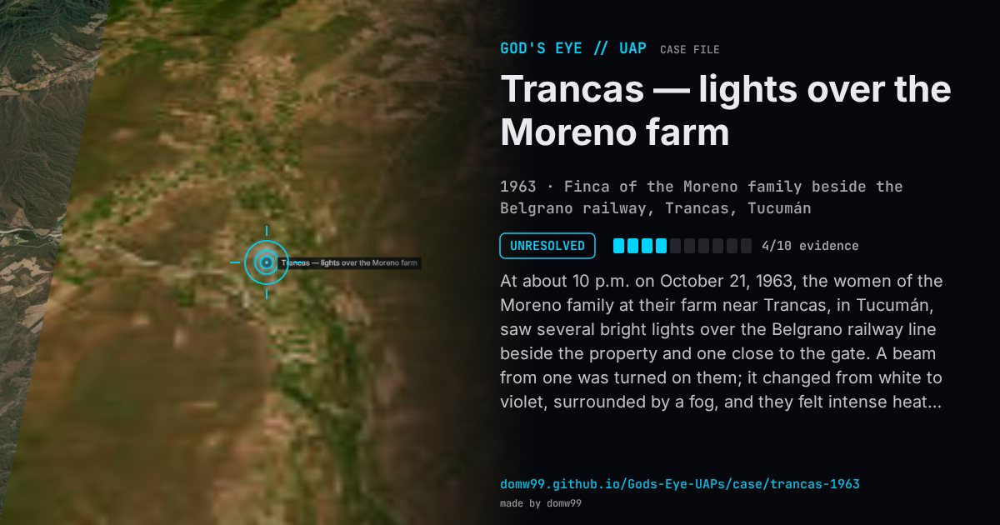

Trancas — lights over the Moreno farm

At about 10 p.m. on October 21, 1963, the women of the Moreno family at their farm near Trancas, in Tucumán, saw several bright lights over the Belgrano railway line beside the property and one close to the gate. A beam from one was turned on them; it changed from white to violet, surrounded by a fog, and they felt intense heat. Figures seemed to move around the lights on the tracks. After about forty minutes the lights left in formation towards the Medina hills. The police report described a white mist with a strong smell of sulphur lasting forty minutes, and small white balls and a powder found by the tracks were later analysed as mostly calcium carbonate. The case was widely reported at the time and is one of the classic Argentine close encounters. Later local accounts add burns to the worker’s face and arm and bare ground where nothing grew; these are not in the contemporary record. La Gaceta notes that soldiers from Tucumán regiments were being moved along those tracks for exercises at the time, which could account for figures seen walking there; nobody has explained the lights.
What was seen
Shape: Several luminous objects, some over the railway line and one near the gate; a beam of light that turned violet
Witnesses: The sisters Argentina and Yolie Moreno, the house worker Dora Martínez Guzmán, and others in the household
Duration: About 40 minutes
Sources
- La Gaceta (Tucumán) — Caso Trancas: the last living witness remembers (2023)
- La Liberté de l’Est, 25 October 1963 (transcribed)
- Contexto Tucumán — Caso Trancas
Browse
- Argentina
- 1960s
- Unresolved
- Close encounters
- Official government documents
- Many independent witnesses
- Physical traces
- Lights and fireballs
- Formations and rows of lights